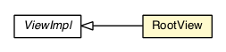

com.gwtplatform.mvp.client
Class RootPresenter.RootView

java.lang.Object
 com.gwtplatform.mvp.client.ViewImpl
com.gwtplatform.mvp.client.RootPresenter.RootView
com.gwtplatform.mvp.client.ViewImpl
com.gwtplatform.mvp.client.RootPresenter.RootView
- All Implemented Interfaces:
- IsWidget, View
- Enclosing class:
- RootPresenter
public static class RootPresenter.RootView
- extends ViewImpl
RootPresenter's view.
| Methods inherited from class java.lang.Object |
clone, equals, finalize, getClass, hashCode, notify, notifyAll, toString, wait, wait, wait |
RootPresenter.RootView
public RootPresenter.RootView()
asWidget
public Widget asWidget()
- Specified by:
asWidget in interface IsWidget- Overrides:
asWidget in class ViewImpl
setInSlot
public void setInSlot(Object slot,
IsWidget content)
- Description copied from interface:
View
- Requests the view to set content within a specific slot, clearing anything
that was already contained there.
Override the default implementation and manage all the slots of your view
into which content can be placed. If the view doesn't know about this slot,
it can silently ignore the request. When
null is passed, your
implementation should clear the slot.
Used by PresenterWidget.setInSlot(Object, PresenterWidget) and
PresenterWidget.clearSlot(Object).
- Specified by:
setInSlot in interface View- Overrides:
setInSlot in class ViewImpl
- Parameters:
slot - An opaque object indicating the slot to add into.content - The content to add, a IsWidget. Pass null to
clear the slot entirely.
getAppRootPanel
protected RootPanel getAppRootPanel()
- Return the RootPanel on which to add the content.
It returns the default RootPanel.
It can be overriden to return another RootPanel to allow embeding the application.
- Returns:
- the RootPanel on which to add the content
lockScreen
public void lockScreen()
unlockScreen
public void unlockScreen()
ensureGlass
public void ensureGlass()
Copyright © 2010-2013 ArcBees. All Rights Reserved.